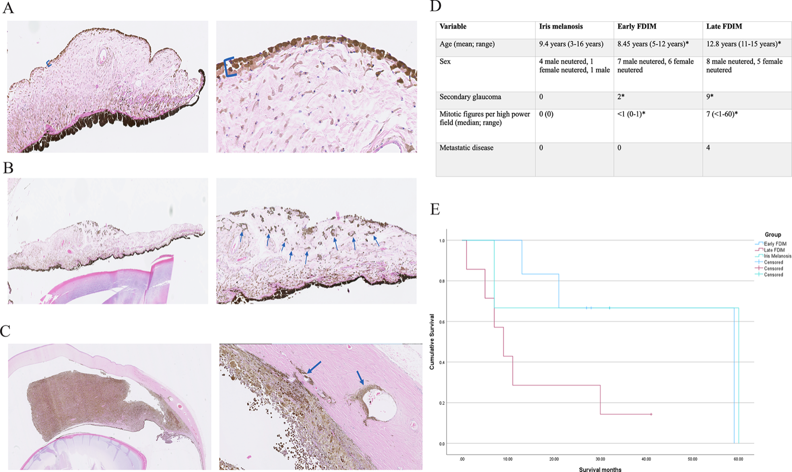
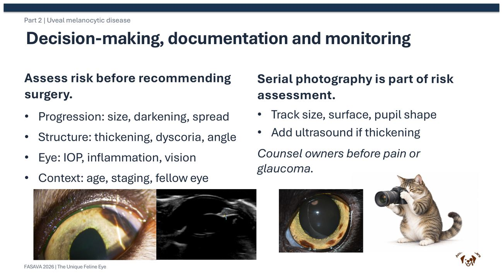
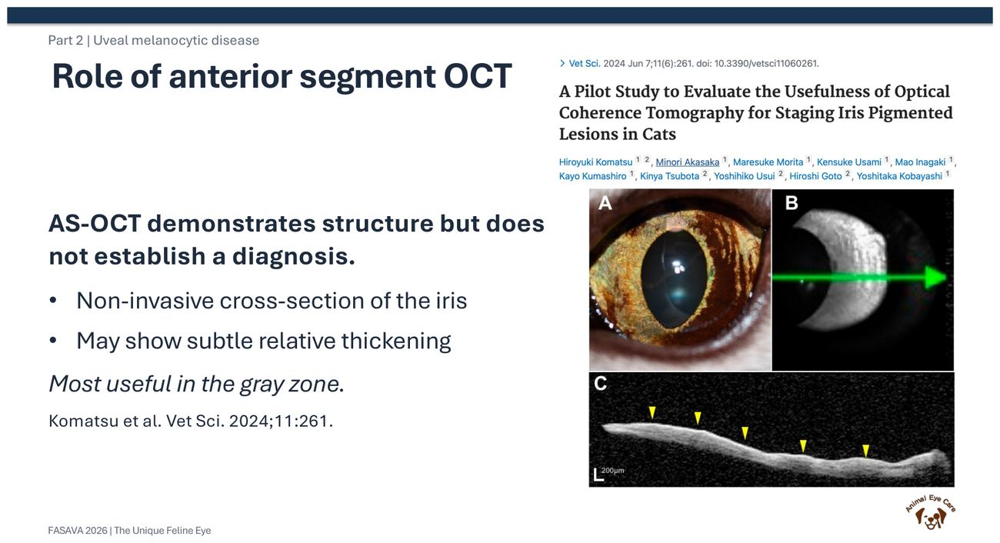
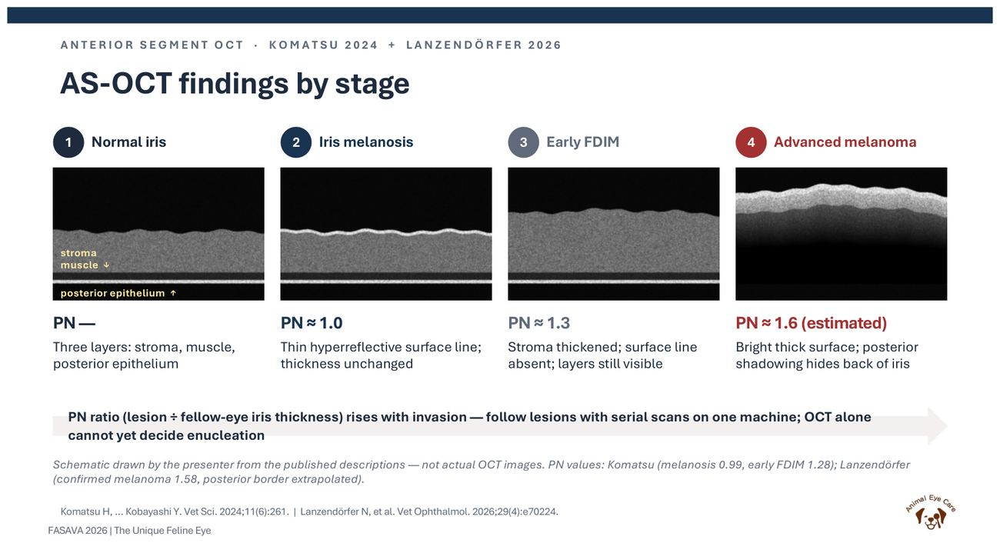
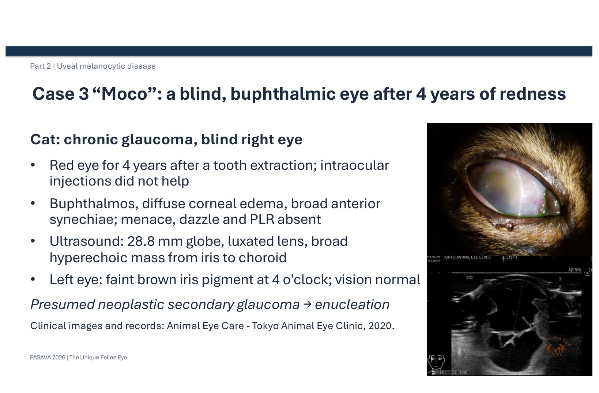
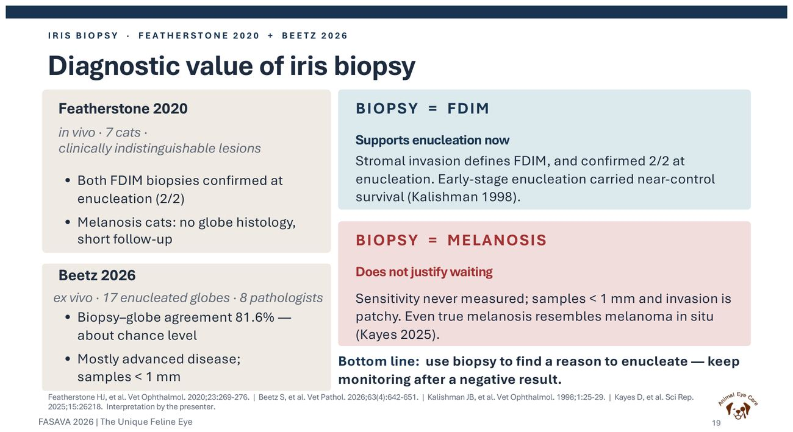
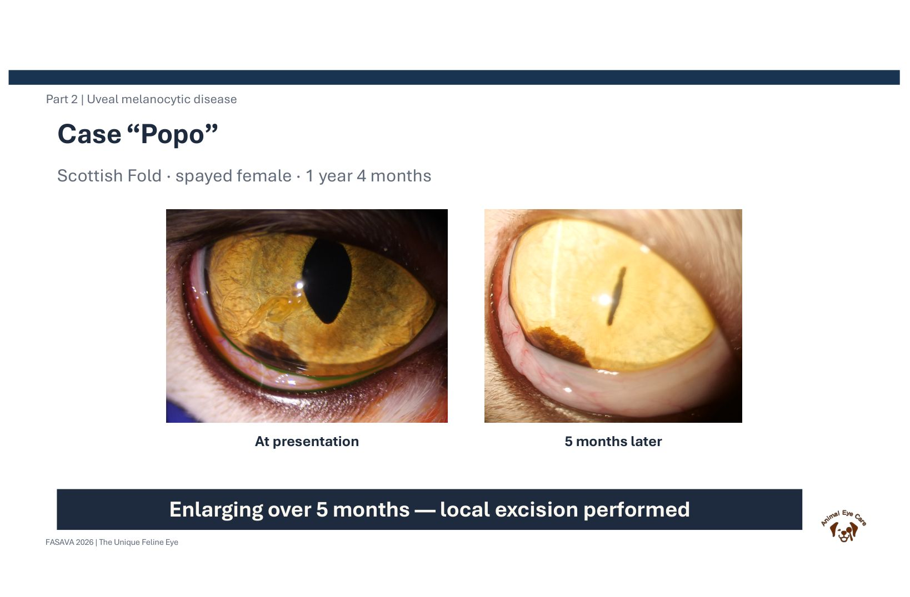
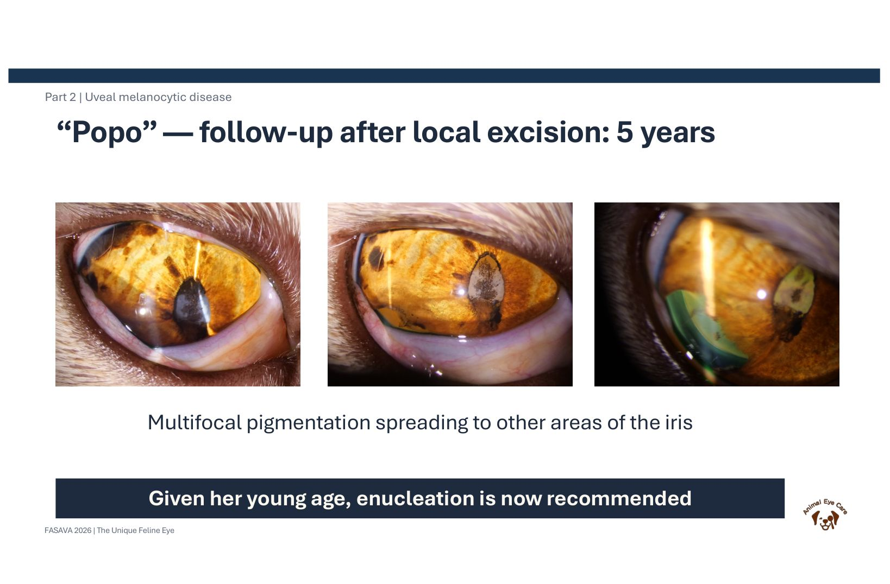
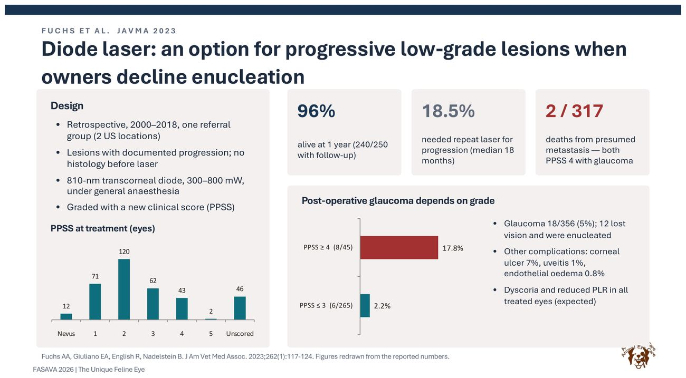

核心結論
- 這是什麼病
- 瀰漫性虹膜黑色素瘤（FDIM）是貓最常見的眼內腫瘤：虹膜表面出現扁平的色素增加，在數月到數年間進展，晚期會造成續發性青光眼，並轉移到肝、肺、脾、淋巴結、骨（轉移率 19–63%）（講義 p.40）。
- 為什麼難
- 良性的虹膜黑色素沉著（melanosis）和早期 FDIM 在檢查時看起來一樣（講義 p.49），兩者的分界是組織學上「腫瘤細胞有沒有侵入虹膜基質（stroma）」，而這只有切片才看得到。狗的虹膜色素病灶很少轉移，貓的卻可能致命，不能用狗的邏輯看貓（講義 p.3）。
- 重點
- 裂隙燈＋標準化拍照是追蹤的主體：看大小、顏色、表面（扁平或增厚、天鵝絨狀）、瞳孔形狀、色素有沒有散落。
- 眼壓與隅角鏡：眼壓升高或隅角被侵犯是晚期警訊；眼壓偏低要想葡萄膜炎。
- 前眼節 OCT：看病灶處虹膜有沒有相對增厚（PN 比值：黑色素沉著約 1.0、早期 FDIM 約 1.3）；只能輔助，不能單獨決定摘眼。
- 超音波：一般 B-mode 看不清早期虹膜增厚，用來看睫狀體腫塊、水晶體脫位、眼球大小；看虹膜和隅角要用高頻 UBM。
- 虹膜切片是轉診層級的顯微手術；切到 FDIM 可以支持摘眼，切到黑色素沉著卻不能排除 FDIM。
- 處置：監測、經角膜二極體雷射、局部切除、摘眼。只有摘眼有機會根治，摘下的眼球一定要送病理分期。
- 流程：基準檢查 → 每 2–3 個月拍照＋眼壓 → 出現增厚、瞳孔變形、色素散落、眼壓上升、發炎或加速進展時，轉為積極處置。
- 容易搞混
- ① 「看起來扁平、淡褐色」不等於良性：早期 FDIM 也可以是扁平的（Komatsu 2024 的早期 FDIM 4 隻中有 2 隻表面平滑）。② 「切片是黑色素沉著」不等於安全：檢體不到 1 mm，侵犯呈斑塊狀，可能剛好沒切到。③ 「年輕」不能排除：講義病例 Popo 1 歲 4 個月就切出早期 FDIM。
標「講義」的是 Kobayashi 講義內容（頁碼指 PDF 頁）；標「文獻」的是這次查到並讀到摘要或全文的研究，作者年份都寫在旁邊；標「補充」的是一般眼科知識，這次沒有另外找文獻核對；標「推論」的是我依資料推出的看法。兩眼眼壓差異的切點，這次沒有找到貓專屬數據，判讀以「和對側眼比較」為原則。眼球超音波的正常值（波斯貓 B-mode、家貓 UBM）與判讀細節另見〈眼球超音波判讀〉。講義本身的完整整理見上群AH〈貓眼的獨特性：眼表、虹膜與眼底〉第 6–7 節。
FDIM 是什麼：分期與預後
從黑色素沉著到晚期 FDIM 是一條連續的光譜，預後取決於腫瘤侵犯到哪裡，所以後面每一項檢查，目的都是在推測病灶目前走到光譜的哪一段。
組織學分期（講義 p.41–42，Kayes 2025）
| 分期 | 組織學定義 | 臨床意義 |
|---|---|---|
| 虹膜黑色素沉著（iris melanosis） | 發育不良的黑色素細胞只排在虹膜前表面，最多三層，沒有侵入下方基質 | 良性，但可能進展；Kayes 2025 指出它在組織學上已經像原位黑色素瘤 |
| 早期 FDIM | 腫瘤性黑色素細胞侵入虹膜基質；這一個特徵就是良性和惡性的分界 | 此時摘眼，存活接近未患病的貓（Kalishman 1998） |
| 晚期 FDIM | 侵犯隅角、睫狀體、鞏膜；侵入鞏膜靜脈叢（scleral venous plexus）被認為是血行轉移的路徑 | 續發性青光眼、轉移、存活時間顯著縮短 |

三期的臨床病理對照（講義 p.47，Kayes 2025，n = 33）
| 項目 | 黑色素沉著（n=7） | 早期 FDIM（n=13） | 晚期 FDIM（n=13） |
|---|---|---|---|
| 平均年齡（歲） | 9.4 | 8.45 | 12.8* |
| 續發性青光眼 | 0 | 2* | 9* |
| 核分裂數／HPF（中位數） | 0 | <1* | 7* |
| 轉移 | 0 | 0 | 4 |
* p < 0.05。晚期 FDIM 的局部侵犯：鞏膜靜脈叢 9/13（69%）、脈絡膜 5/13（38%）、隅角／小樑網 3/13（23%）、鞏膜外層 3/13（23%）。這張表的讀法：青光眼和核分裂數會隨分期一路上升，所以眼壓升高本身就暗示病灶已經走到後段；黑色素沉著和早期 FDIM 的存活曲線分不開，代表「在早期就處理」是有效的時間窗。
組織學上預測轉移的因子（文獻：Wiggans 2016，47 隻，轉移 19%）
| 因子 | 和轉移的關係 | 這個指標在說什麼 |
|---|---|---|
| 核分裂指數 >7／10 HPF（×400） | 轉移率上升 | 腫瘤細胞分裂快；7 是研究找出的切點 |
| 腫瘤延伸到鞏膜外（extrascleral extension） | 轉移率上升 | 已經離開眼球 |
| 腫瘤內壞死 | 轉移率上升 | 生長快到血流供應不上 |
| 侵犯脈絡膜 | 轉移率上升 | 脈絡膜血管豐富，是血行轉移的入口 |
| E-cadherin、melan-A 染色強度增加 | 轉移率上升 | 免疫組織化學（IHC）指標 |
| PNL2 染色均勻 | 轉移率下降 | IHC 指標 |
| B-Raf 表現 | 和轉移無顯著關係 | — |
其他預後資料
- Kalishman 1998（文獻）：34 隻因 FDIM 摘眼的貓，對照 83 隻同齡貓。腫瘤侷限在虹膜時摘眼，存活和對照組相近；侵犯後虹膜上皮、睫狀體或鞏膜靜脈叢時預後較差。結論是「早期摘眼對避免提早死亡很重要」。
- 青光眼與存活（文獻，二手引用）：MSPCA Coster 引用一篇 2002 年的研究，有續發性青光眼的 FDIM 貓存活 21%（4/19），沒有青光眼的 73%（11/15），差異接近顯著。但 Wiggans 2016 並沒有發現青光眼會增加轉移風險。這兩篇結論不一致，原文我沒有讀到。
- 轉移可能很晚才出現（文獻：Coster）：作者看過摘眼後數年才出現轉移或眼眶復發的病例，所以摘眼不等於結案。
補充：Kayes & Blacklock 2022 的回顧把摘眼列為標準治療，不建議虹膜切除或 Nd:YAG 雷射光凝；講義 p.58 的二極體雷射是「飼主不願摘眼時」的選項，詳見上群AH 課程頁第 6 節的補充框。
虹膜色素變化的鑑別診斷
不是每個虹膜色斑都是 FDIM 的前身。先確認是「色素本身」的變化，還是發炎或其他疾病造成的顏色改變，後者的處理方向完全不同。
| 鑑別 | 支持的特徵 | 下一步 |
|---|---|---|
| 虹膜顏色正常成熟（補充） | 小貓虹膜顏色會持續變化，通常幾個月到 1 歲左右穩定；兩眼對稱、整片均勻改變 | 成年後就不應再出現新的局部色斑 |
| 虹膜雀斑（iris freckle）／痣（nevus）（文獻：Coster） | 局部、扁平的色素點；較大的雀斑稱為痣 | 拍照追蹤 |
| 虹膜黑色素沉著（iris melanosis） | 扁平、淡褐色、表面不均勻、虹膜紋理還在；年紀大時可呈「虎斑狀」（tiger-stripe）瀰漫分布（Coster） | 拍照＋眼壓定期追蹤；虎斑型仍需組織學才能排除 FDIM |
| 早期 FDIM | 外觀可與黑色素沉著完全相同；可能局部微隆起、表面較均勻、顏色較深 | OCT、切片、討論摘眼 |
| 黑色素沉著背景上的局部黑色素瘤（文獻：Coster） | 在淡色的黑色素沉著中，出現一塊較深、較厚、較均勻的區域 | 這塊就是要重點追蹤或切片的位置 |
| 葡萄膜炎造成的虹膜變色（補充） | 房水閃光（aqueous flare）、角膜後沉積物（keratic precipitates, KPs）、虹膜充血（rubeosis iridis）、眼壓偏低、前粘連；虹膜顏色變暗或變紅褐 | 找病因：貓傳染性腹膜炎（Feline Infectious Peritonitis, FIP）、貓白血病病毒（FeLV）、貓免疫缺乏病毒（FIV）、弓蟲（Toxoplasma）、淋巴瘤 |
| 虹膜淋巴瘤（補充） | 通常是粉紅到白色的浸潤或結節、合併葡萄膜炎，而不是褐黑色色素 | 房水細胞學（見第 8 節）、全身檢查 |
講義 p.65 提到：貓的眼內發炎在年輕、收容所、多貓環境要先想 FIP；前外出貓要想弓蟲與隱球菌；老貓要想淋巴瘤。所以只要看到 flare 或 KPs，先處理葡萄膜炎的病因，不要直接當成色素病灶追蹤。另一方面，FDIM 本身也會造成葡萄膜炎，所以兩者可以同時存在（Coster：葡萄膜炎、青光眼、色素散落、瞳孔光反射異常都比較支持 FDIM）。
裂隙燈檢查與標準化拍照
最便宜、最常做、也最重要的一項。講義 p.48 把它列為風險評估的核心：決定要不要手術前，先評估進展、結構、眼睛本身和整體背景。
每次要看的六件事（文獻：Coster；講義 p.48）
| 項目 | 偏黑色素沉著（良性） | 偏 FDIM 或進展中 | 為什麼 |
|---|---|---|---|
| 厚度 | 扁平，沒有隆起 | 增厚、隆起 | 黑色素沉著是正常的黑色素細胞堆在正常位置；腫瘤細胞分裂才會讓色素層變厚 |
| 表面質地 | 顯微下不均勻、虹膜紋理（crypts、基質纖維）還看得到 | 均勻一片、天鵝絨狀（velvet-like），紋理消失 | 腫瘤細胞取代原本的基質結構 |
| 顏色 | 較淡的褐色 | 較深、接近黑色 | 黑色素含量較高 |
| 瞳孔 | 圓整，瞳孔光反射（PLR）收縮幅度正常 | 瞳孔變形（dyscoria）、瞳孔緣外翻或被侵犯、收縮幅度變小 | 腫瘤侵入基質後影響瞳孔括約肌與擴大肌 |
| 色素散落 | 沒有 | 色素出現在水晶體前囊、角膜內皮，或懸浮在房水中 | 腫瘤細胞或色素脫落 |
| 發炎與眼壓 | 眼壓正常、沒有 flare | 葡萄膜炎、青光眼 | 見第 4 節 |

標準化拍照怎麼做（推論＋補充）
追蹤的目的是比較，所以每次條件要一樣，否則看到的「變大」可能只是角度或瞳孔大小不同：
- 固定條件：同一台相機或手機、同樣的距離、正面與固定的斜角各一張、同樣的光源。
- 瞳孔狀態：瞳孔大小會改變虹膜露出的面積，同一個病灶在瞳孔放大時看起來比較小。可在亮處（瞳孔縮小、虹膜攤開）拍一組，散瞳前後各拍一組，並記錄當時的狀態。
- 用時鐘位置記錄範圍：例如「右眼 4–8 點鐘、從虹膜根部延伸到瞳孔緣」，比「約 1/6」更容易每次比較。
- 兩眼都拍：對側眼是最好的對照，也能及早發現另一眼出現病灶（Coster 提到轉移到對側眼很少見，但仍可能）。
補充：裂隙燈下的「flare」是光束穿過前房時看得到光柱，代表房水中蛋白質增加（血液－房水屏障被破壞）；KPs 是發炎細胞黏在角膜內皮形成的小點。兩者都是葡萄膜炎的徵象。
眼壓（Intraocular Pressure, IOP）與隅角鏡（gonioscopy）
FDIM 往後段走時會侵犯隅角（房水流出的地方），造成續發性青光眼。眼壓和隅角就是在看腫瘤有沒有走到這一段。
眼壓的參考值會因儀器而不同（文獻）
| 儀器 | 健康貓的測值（mmHg） | 出處 |
|---|---|---|
| TonoVet Plus（回彈式） | 16.9 ± 1.2 | Veterinary World 2024（臨床評估） |
| Tono-Pen Avia Vet（壓平式） | 16.2 ± 1.1 | 同上 |
| 門診同時比較：TonoVet／TonoVet Plus／Tono-Pen Avia Vet／Kowa HA-2 | 19.7 ± 6.6／17.1 ± 5.4／16.3 ± 4.3／14.5 ± 2.2 | Veterinary World 2024（另一篇） |
- 這些數字怎麼用：同一隻貓用不同儀器量，結果可以差到 5 mmHg，所以追蹤時一律用同一台儀器，並以自己院內那台儀器的參考值判讀。
- 壓平式在高眼壓時會低估：TonoVet 比 Tono-Pen XL 更接近真實眼壓，而 Tono-Pen 在貓青光眼時會明顯低估高眼壓（2023 研究）。懷疑青光眼時，數字「還好」不代表真的還好。
- 兩眼比較：這次沒有找到貓的兩眼差異切點，所以頁面不寫數字。實務上只要單眼明顯高於對側眼，就要搭配隅角檢查和臨床症狀（角膜水腫、瞳孔放大、眼球變大）一起看。
眼壓結果怎麼讀（推論，依講義與 Kayes 2025）
| 結果 | 可能代表 | 對 FDIM 決策的意義 |
|---|---|---|
| 兩眼正常、對稱 | 隅角應該還沒被明顯侵犯 | 可以繼續追蹤（仍需搭配其他檢查） |
| 患眼升高 | 腫瘤細胞或色素阻塞隅角、隅角被侵犯、續發性青光眼 | Kayes 2025 晚期 FDIM 9/13 有青光眼；講者與 2016 年專科醫師調查都建議有青光眼的 FDIM 眼要摘除 |
| 患眼偏低 | 葡萄膜炎（睫狀體分泌房水減少） | 先找葡萄膜炎原因；FDIM 本身也可能引起發炎 |
補充（一般操作原則，未另行查證）：保定時不要壓頸部（頸靜脈受壓會讓眼壓上升）、不要撐眼瞼時壓到眼球；在點散瞳劑之前量；盡量在每天差不多的時間量。
隅角鏡（gonioscopy）
- 在看什麼：虹膜角膜角（iridocorneal angle）與梳狀韌帶（pectinate ligament）。正常貓的隅角開口寬、梳狀韌帶纖維細而疏，比狗容易看見（文獻：PMC 圖說）；很多時候不需要隅角鏡就看得到一部分。
- FDIM 的異常：隅角或小樑網（trabecular meshwork）有色素沉積或腫瘤細胞浸潤、梳狀韌帶被色素塊遮住。講義 p.48 把「angle」列為結構風險之一；Kayes 2025 晚期 FDIM 有 3/13 侵犯隅角。
- 讀法：隅角被侵犯代表腫瘤已經走出虹膜基質，接近房水流出路徑與鞏膜靜脈叢，是強烈建議摘眼的徵象（推論，依 Kayes 2025 分期定義）。
前眼節光學同調斷層掃描（Anterior Segment OCT, AS-OCT）
OCT 用近紅外光做出虹膜的橫切面，可以看到肉眼看不到的「厚度」與「分層」。它的價值在灰色地帶：外觀像黑色素沉著，但不確定有沒有侵入基質。

研究怎麼做（文獻：Komatsu 2024，18 隻單眼病灶）
- 儀器：頻域 OCT（Spectralis, Heidelberg）加前眼節模組。
- 不需要鎮靜：徒手保定貓頭在儀器前，每隻 10 分鐘內完成。用光照對側眼讓瞳孔縮小、虹膜攤開。
- 怎麼量：在病灶的虹膜根部、瞳孔緣、病灶中央三點量厚度，平均成 MIT（mean iris thickness）；再除以對側正常眼同部位的 MIT，得到 PN 比值（Pigmented lesion ÷ Normal iris）。
- 為什麼用比值不用絕對厚度：各組的 MIT 絕對值沒有顯著差異（290、352 ± 95、353 ± 105 µm，p = 0.61），因為每隻貓虹膜本來就厚薄不同；和自己的另一眼比，才看得出「相對增厚」。
判讀表
| 分期 | PN 比值 | OCT 影像特徵 |
|---|---|---|
| 正常虹膜 | — | 三層：基質、肌肉層、後色素上皮 |
| 疑似黑色素沉著（n=8，未經組織學） | 1.02 ± 0.10 | 75% 有表面高反射線 |
| 黑色素沉著（n=3，組織學確診） | 0.99 ± 0.09 | 100% 有表面高反射線（組織學上對應表面堆積的色素細胞）；基質有輕微陰影；厚度不變 |
| 早期 FDIM（n=4） | 1.28 ± 0.18（摘要寫 1.29 ± 0.16） | 表面高反射線消失（腫瘤細胞在基質裡，不在表面）；基質增厚；分層仍可辨認 |
| 中期／晚期 FDIM（n=3） | 無法測量 | 嚴重的後方陰影，看不到虹膜後半部與色素上皮 |
| 確診黑色素瘤（講義引用 Lanzendörfer 2026） | 約 1.58（後緣為外推） | 表面亮而厚，後方陰影 |

PN 比值計算
輸入病灶眼與對側眼同部位三點的厚度（µm），算出 PN 比值，並對照 Komatsu 2024 的分組數值。
預設值只是示範。研究只有 18 隻貓，兩組之間沒有公布切點；這裡的色帶只是把數值放在研究平均值旁邊比較，不是診斷標準。追蹤時比較的是同一隻貓自己的 PN 比值趨勢。
- 先導研究，組織學確診的黑色素沉著只有 3 隻、早期 FDIM 4 隻；審稿人也指出兩組差距不大、樣本太小。
- 只有一位觀察者測量；觀察者間一致性 ICC 0.896（可接受，但不是完美）。
- 中晚期病灶因陰影無法量測，所以 OCT 最適合的正好是早期、外觀看不出差別的病灶。
- 不同 OCT 機型的數值不能互比；作者建議 OCT 當作追蹤虹膜結構變化的輔助工具，需要更大規模、有組織學對照的研究驗證。
眼球超音波（B-mode）與超音波生物顯微鏡（Ultrasound Biomicroscopy, UBM）
超音波在 FDIM 的角色是「看腫瘤有沒有走到後面」：睫狀體、脈絡膜、水晶體、眼球大小。早期虹膜表面的變化，一般超音波解析度看不出來。
兩種超音波的差別
| 一般眼球 B-mode | UBM（高頻） | |
|---|---|---|
| 頻率 | 文獻多用 7.5–18 MHz 線性或微凸探頭（10 MHz 微凸常見） | 約 35–50 MHz（人醫文獻多為 50 MHz） |
| 看得到 | 整顆眼球：前房、水晶體、玻璃體、視網膜、球後 | 只看前段：虹膜厚度、睫狀體、隅角開口、後房 |
| 在 FDIM 的用途 | 睫狀體或脈絡膜腫塊、水晶體脫位、眼球變大、視網膜剝離、玻璃體出血 | 虹膜增厚、腫瘤是否延伸到睫狀體、隅角是否被堵住 |
| 取得難度 | 一般醫院就有 | 多在眼科專科；家貓 UBM 正常值：虹膜中段 0.53 ± 0.11 mm、根部 0.34 ± 0.06 mm、隅角 28.9°（Kim 2026, Vet Sci 13:50；見〈眼球超音波判讀〉第 4 節） |
文獻：人醫研究顯示，UBM 發現睫狀體與周邊虹膜被黑色素瘤侵犯的比例，顯著高於一般 B-scan。貓的 FDIM 目前沒有找到 UBM 厚度切點的研究。
操作要點（補充，一般原則）
- 點表面麻醉劑後，探頭隔著大量無菌耦合凝膠接觸角膜（經角膜），或隔著閉合的眼瞼掃描（經眼瞼，影像較差但較不刺激角膜）。角膜有潰瘍或眼球可能破裂時避免直接加壓。
- 至少掃水平與垂直兩個切面，並且兩眼都要掃、用同樣的設定。貓的 B-mode 正常值只有波斯貓（短頭品種）的資料（眼軸 20.7 ± 1.0 mm，Mirshahi 2014），家貓仍以和對側眼比較為主。完整的正常影像、異常表現與 FDIM 各期在超音波上的樣子，見〈眼球超音波判讀〉。
正常影像長什麼樣（補充，一般教科書知識）
| 構造 | 正常回音 |
|---|---|
| 角膜 | 最前方一到兩條平行高回音線 |
| 前房、玻璃體 | 無回音（黑色） |
| 水晶體 | 只有前囊與後囊兩條弧形高回音，內部無回音；內部出現回音代表白內障 |
| 虹膜、睫狀體 | 水晶體前方兩側的中等回音條帶 |
| 後壁（視網膜＋脈絡膜＋鞏膜） | 一條連續的弧形高回音，正常時分不開 |
| 視神經、球後 | 後壁後方的低回音帶（視神經）與高回音的球後脂肪 |
異常怎麼判讀
| 發現 | 超音波表現 | 和 FDIM 的關係 |
|---|---|---|
| 虹膜／睫狀體增厚或腫塊 | 水晶體旁的軟組織回音變厚、變寬，或往後延伸成團塊 | 腫瘤走出虹膜。講義病例 Moco：從虹膜延伸到脈絡膜的寬廣高回音團塊（晚期 FDIM） |
| 眼球變大（牛眼, buphthalmos） | 眼軸長度明顯大於對側眼 | 慢性青光眼的結果；Moco 患眼 28.8 mm |
| 水晶體脫位 | 水晶體離開正常位置，掉到前房或玻璃體 | 眼球被撐大、懸韌帶斷裂；Moco 也有 |
| 視網膜剝離 | 玻璃體內的高回音帶，後端連在視神經盤、前端連在鋸齒緣（ora serrata），完全剝離時呈 V 形或海鷗翅膀狀（文獻） | 貓最常見的原因是高血壓（講義 Part 3）；腫瘤或葡萄膜炎也會造成 |
| 玻璃體出血 | 玻璃體內點狀或絮狀回音，可能遮住後方構造 | 出血會干擾判讀，見下方警告 |

文獻（Wisconsin，113 例超音波與組織學對照）：超音波通常能偵測到眼內腫瘤，但出血或發炎病灶有時會被誤判成腫瘤；有出血的眼睛中，約 37% 的視網膜剝離被漏判。所以超音波看到「團塊」不等於腫瘤，看不到剝離也不等於沒有。狗的病例報告用能量都卜勒（Power Doppler）看血流，來分辨剝離的視網膜和血塊。
全身評估與轉移分期
兩個不同的目的：一是排除葡萄膜炎的全身性病因，二是懷疑 FDIM 時確認有沒有轉移。
- FeLV 抗原／FIV 抗體
- FCoV 相關檢查、球蛋白（講義 p.67：7 月齡 FIP 貓有高球蛋白血症、FCoV 抗體 1:6400）
- 弓蟲抗體
- 必要時房水穿刺做細胞學或 PCR（見第 8 節）
講義 p.69 的提醒：治療沒反應時要重新檢討診斷（隱球菌病例）。
- 血液檢查（CBC、生化）
- 胸腔 X 光或胸腔 CT
- 腹部超音波或腹部 CT
可能的轉移位置：局部淋巴結、肺、肝、脾、腎，很少到對側眼。早期的微小轉移即使用進階影像也可能看不到。
推論：摘眼前做一次轉移篩檢，一方面是麻醉前評估，一方面當作摘眼後追蹤的基準。如果已經有轉移，摘眼的目的就從「根治」變成「止痛、處理青光眼」，和飼主溝通的內容也不同。
採樣方式、副作用與結果判讀
眼內採樣有三種層級：房水穿刺（抽液體）、虹膜切片（剪一小片組織）、摘眼後整顆眼球病理。對 FDIM 而言，只有後兩者能看到「基質有沒有被侵犯」。
三種採樣比較
| 房水穿刺（aqueocentesis） | 虹膜切片（iris biopsy） | 摘眼後組織病理 | |
|---|---|---|---|
| 做法 | 鎮靜或全身麻醉，從角膜緣進針抽少量房水 | 全身麻醉，手術顯微鏡下做部分虹膜切除 | 整顆眼球固定後切片 |
| 能回答什麼 | 葡萄膜炎病因：淋巴瘤、FIP（細胞學＋RT-PCR）、感染 | 這一小片有沒有基質侵犯 | 完整分期、核分裂指數、有無鞏膜外延伸、脈絡膜侵犯 |
| 對 FDIM 的價值 | 不能診斷 FDIM（這次沒找到相關文獻）；用來排除其他原因 | 陽性有意義、陰性不能排除 | 黃金標準 |
| 主要風險 | 文獻報告 95 例（56 犬、39 貓）沒有臨床上重要的併發症 | 出血、葡萄膜炎、瞳孔變形、角膜潰瘍、眼壓上升 | 摘眼本身的手術與麻醉風險 |
房水穿刺（文獻）
- 2015 研究（56 犬、39 貓，前葡萄膜炎）：沒有臨床上重要的併發症，作者認為可以安全執行。細胞學主要的用處是協助診斷淋巴瘤（6 犬、7 貓）。
- 2014 研究（10 隻貓）：房水細胞學可以在狗診斷腫瘤，但在貓通常沒有幫助。臨床上看到的前房細胞量，和細胞學結果相關性差，所以不能只靠臨床分級決定要不要抽。
- FIP：房水細胞學＋RT-PCR 的特異度 90%，但敏感度只有 34.8–63%。也就是說陽性有參考價值、陰性不能排除，適合在臨床上已高度懷疑 FIP 時用來支持診斷。
- 補充（一般原理，未另行查證）：理論上的風險包括前房出血、刺到水晶體造成白內障、角膜內皮受傷、感染、短暫的發炎加重。
虹膜切片（講義 p.50–51；文獻：Featherstone 2020、Coster、Beetz 2026）
| Featherstone 2020（7 隻單側虹膜色素沉著貓，2013–2016） | 結果 |
|---|---|
| 第一次切片就能診斷 | 6/7（1 隻需要重切） |
| 組織學結果 | 黑色素沉著 5 隻、早期 FDIM 2 隻；FDIM 兩隻後來摘眼都確認（2/2） |
| 術中輕微出血 | 4 隻 |
| 纖維蛋白凝塊（fibrin clot） | 2 隻 |
| 假性多瞳（pseudopolycoria，切除處看起來像第二個瞳孔） | 2 隻 |
| 角膜潰瘍、術後眼壓上升、瞳孔變形 | 各 1 隻 |
作者把這些併發症歸為輕微。補充（推論）：其他可能但這篇沒有報告的風險包括碰到水晶體造成白內障、眼內炎，以及全身麻醉本身的風險；理論上有腫瘤播種的疑慮，但這次沒有找到實際案例報告。

基質侵犯就是 FDIM 的定義 → 支持現在摘眼。早期摘眼的存活接近對照組（Kalishman 1998）。
敏感度從未被測量、檢體小、侵犯呈斑塊狀 → 不能當作可以放心等的理由，仍要持續追蹤。Coster 也提到：瀰漫性病灶「切哪裡」決定結果。
局部切除的病例：Popo（講義 p.52–55）


這個病例說明兩件事：年輕貓也可能是 FDIM（切片為早期 FDIM），以及局部切除不等於根治，切除後仍要長期追蹤。
摘眼後的病理報告要看什麼（推論，依 Kayes 2025、Wiggans 2016）
- 分期：黑色素沉著／早期（只侵犯虹膜基質）／晚期（隅角、睫狀體、脈絡膜、鞏膜）。
- 有沒有侵犯鞏膜靜脈叢、鞏膜外延伸、脈絡膜：轉移風險的關鍵。
- 核分裂指數：是否 >7／10 HPF。
- 壞死、IHC（melan-A、E-cadherin、PNL2）可視需要要求。
- 手術切緣：視神經斷端與眼球外組織有沒有腫瘤細胞。
處置選項比較
四個選項不是互斥的，常見路徑是「監測 → 出現進展 → 雷射或切片 → 必要時摘眼」。怎麼選，取決於病灶走到哪、貓的年紀，以及飼主能不能執行密切追蹤。
| 選項 | 適合 | 好處 | 風險與限制 |
|---|---|---|---|
| 監測 | 扁平、穩定、沒有增厚、眼壓正常的病灶 | 保留眼球、沒有麻醉風險 | 看起來像黑色素沉著的病灶可能已是早期 FDIM，錯過最佳時機 |
| 經角膜二極體雷射（810 nm） | 有記錄到進展的小範圍病灶，飼主不願摘眼 | 保留眼球；1 年存活 96% | 見下表；治療前沒有組織學，不知道是阻止還是只是延緩進展 |
| 局部切除／切片 | 局部病灶、需要組織學 | 拿到組織診斷 | 見第 8 節；Popo 切除後 5 年復發 |
| 摘眼（enucleation） | 確診或高度懷疑 FDIM、有青光眼、隅角侵犯、年輕且進展中 | 唯一有機會根治；完整病理分期；貓對單眼適應良好 | 全身麻醉、出血、眼眶感染、外觀改變；已轉移者無法根治 |
二極體雷射的數據（講義 p.58，Fuchs 2023 JAVMA，317 隻回溯）

- 其他併發症：角膜潰瘍 7%、葡萄膜炎 1%、角膜內皮水腫 0.8%；所有治療眼都會有瞳孔變形與 PLR 減弱（預期內）。
- 做法（文獻：Coster）：麻醉下經角膜照射，直到色素區域縮小 50% 以上；術後瞳孔緣變形可能造成怕光。Coster 的立場是「小範圍進展病灶用雷射，範圍較大的進展病灶早點摘眼」。
- 讀法：PPSS 越高，雷射後青光眼越多，所以雷射比較適合早期、小範圍的病灶。
摘眼之後
- 眼球一定要送病理（見第 8 節要看的項目）。
- 確診 FDIM 後的影像追蹤頻率，這次沒有找到指引；推論：前幾年定期做胸腔影像與腹部超音波，因為轉移可能在數年後才出現（Coster）。
- 黑色素瘤疫苗（Oncept）（文獻：Coster）：犬口腔黑色素瘤的治療性疫苗，用在貓屬於仿單外使用。JFMS 2015 的 24 隻眼部或眼周黑色素瘤貓中，14 隻最後死於黑色素瘤（其中三分之一用疫苗前已轉移），研究無法評估療效。
摘眼時機：兩種立場
中度與晚期 FDIM 轉移風險真實，想根治就要在早期黑色素瘤階段摘。即使是黑色素沉著，貓年輕且病灶進展中，或家屬非常焦慮（即使眼睛還有視力），也建議摘眼，而且要在青光眼或眼痛出現之前。
92 隻有虹膜色素過度沉著的貓，36 隻有追蹤（中位 3.4 年）：摘眼組存活 73%、未摘眼組 64%，無顯著差異（p = 0.69）。未摘眼的 14 隻中有 8 隻（57%）色素持續慢慢增加。但這是回溯性問卷研究，回覆率 39%，分組由醫師選擇，未摘眼組沒有組織學，只能產生假說。
建議診斷流程與時程
把前面各節串起來。時程以 Coster 的監測建議與講義的決策框架為基礎，實際安排以眼科醫師判斷為準。
・扁平、無增厚、PN 接近 1.0、眼壓與隅角正常 → 進入監測
・有增厚、PN 明顯上升、瞳孔變形、色素散落 → 討論切片、雷射或摘眼
・眼壓升高、隅角侵犯、睫狀體腫塊 → 轉移篩檢後摘眼
時程表
| 時間 | 做什麼 | 依據 |
|---|---|---|
| 現在 | 整理舊照片、拍一組兩眼標準化照片、量兩眼眼壓 | 推論 |
| 1–2 週內 | 眼科專科：裂隙燈、眼壓、隅角、AS-OCT／UBM 基準 | 講義 p.48；推論 |
| 有發炎時 | FeLV／FIV、FCoV、弓蟲；必要時房水穿刺 | 講義 p.65–69 |
| 每 2–3 個月 | 拍照＋眼壓＋裂隙燈 | Coster |
| 每 3–6 個月 | 同一台機器重做 OCT／UBM | 推論（Komatsu 建議用 OCT 追蹤結構變化，未給頻率） |
| 出現警訊 | 討論切片、雷射或摘眼；摘眼前做轉移篩檢 | 講義 p.48、p.59；Coster |
套用：年輕貓的進展性虹膜色斑
觸發這個專題的情境：一隻貓 6 個月大時虹膜完全沒有色斑，之後出現並擴大到約 1/6 虹膜面積。以下把前面的框架套進去。
| 框架項目（講義 p.48） | 這個情境的狀況 | 還缺什麼 |
|---|---|---|
| 進展 | 有記錄到擴大，這是最重要的一點：不是先天就有、穩定不變的雀斑 | 現在年齡、從出現到 1/6 花了多久（進展速度） |
| 結構 | 單張照片無法判斷增厚與瞳孔變形 | 裂隙燈、OCT／UBM、PLR |
| 眼睛 | 未知 | 兩眼眼壓、有無 flare、視力 |
| 背景 | 年輕 | 對側眼是否也有色斑、全身狀況 |
「年輕＋有進展」正是講者建議即使是黑色素沉著也考慮摘眼的情況（講義 p.59）；Gregorio 2026 則支持在嚴密追蹤下保留眼球。兩種做法都有依據，差別在於能不能接受、也能不能執行每 2–3 個月的追蹤。決策的關鍵資訊是：有沒有增厚或基質侵犯的跡象，以及隅角和眼壓是否正常。
帶去眼科門診可以問的問題
- 病灶有沒有增厚、表面是否還保有虹膜紋理？瞳孔光反射與瞳孔形狀正常嗎？
- 兩眼眼壓各是多少？用哪一台儀器量的？隅角有沒有色素或浸潤？
- 可以做 AS-OCT 或 UBM 嗎？PN 比值多少？之後能不能用同一台機器追蹤？
- 依目前所見，您傾向追蹤、雷射、切片還是摘眼？轉為積極處置的條件是什麼？
- 如果選擇追蹤，多久回診一次？每次要做哪些項目？
自我測驗
※ 題目為依本頁內容自編的複習題，不是國考或考古題。
(2) 病灶平均 (380+420+300)/3 = 366.7 µm，對側 (320+330+260)/3 = 303.3 µm，PN ≈ 1.21。介於黑色素沉著（0.99）與早期 FDIM（1.28）的平均之間，代表有相對增厚的可能，但研究樣本很小、沒有切點，應結合裂隙燈表現與進展速度判斷，並用同一台機器追蹤趨勢。
(3) 增厚或隆起、深黑色天鵝絨狀區域、瞳孔變形、色素散落、眼壓上升、隅角侵犯、葡萄膜炎、進展加速。
(4) 不安全：檢體不到 1 mm、侵犯呈斑塊狀，切片與整顆眼球一致率只有 81.6%；陰性結果之後仍要持續追蹤。
(2) 轉移篩檢：血液檢查、胸腔 X 光或 CT、腹部超音波或 CT（Coster）；也作為麻醉前評估與日後追蹤基準。早期微小轉移仍可能看不到。
(3) 分期、鞏膜靜脈叢與脈絡膜侵犯、鞏膜外延伸、核分裂指數是否 >7／10 HPF、壞死、切緣；必要時 IHC（melan-A、E-cadherin、PNL2）。
參考資料
講義
- Kobayashi Y. The Unique Feline Eye（Part 2：Uveal melanocytic disease, p.38–59）. FASAVA 2026 Taipei. 本機：
DVM/2026 Fasava/1101（日）/H廳/第3節 1400-1530 眼科學 Yoshitaka Kobayashi/。講義整理見上群AH〈貓眼的獨特性〉。
這次讀到全文或摘要的文獻
- Komatsu H, et al. A pilot study to evaluate the usefulness of optical coherence tomography for staging iris pigmented lesions in cats. Vet Sci. 2024;11(6):261.（PMC 全文）
- Coster ME. Feline iris hyperpigmentation. MSPCA-Angell.（網頁；注意：該頁參考文獻清單與內文不符，內文引用的 2002、2016、2015 研究無法從頁面核對）
- Featherstone HJ, et al. Iris biopsy to investigate feline iris hyperpigmentation. Vet Ophthalmol. 2020;23(2):269–276.（摘要，連結）
- Wiggans KT, Reilly CM, Kass PH, Maggs DJ. Histologic and immunohistochemical predictors of clinical behavior for feline diffuse iris melanoma. Vet Ophthalmol. 2016;19 Suppl 1:44–55.（eScholarship）
- Kalishman JB, et al. A matched observational study of survival in cats with enucleation due to diffuse iris melanoma. Vet Ophthalmol. 1998;1:25–29.（摘要）
- Gregorio, Lassaline, Holt. Iris hyperpigmentation in cats: progression, globe retention and long-term survival. Vet Ophthalmol. doi:10.1111/vop.70216.（摘要）
- Kayes D, et al. Sci Rep. 2025;15:26218.（doi，CC BY 4.0）
- Fuchs AA, Giuliano EA, English R, Nadelstein B. J Am Vet Med Assoc. 2023;262(1):117–124.（講義引用）
- Beetz S, et al. Vet Pathol. 2026;63(4):642–651；Lanzendörfer N, et al. Vet Ophthalmol. 2026;29(4):e70224.（講義引用，未讀原文）
- 貓眼壓儀器比較：Veterinary World 2024（Feb、Aug）；TonoVet 與 Tono-Pen XL 驗證（PMC）。
- 房水穿刺：Diagnostic utility of aqueocentesis and aqueous humor analysis in dogs and cats（摘要）；10 隻貓研究（摘要）。
- 超音波與組織學對照 113 例（摘要）；犬 B-scan 182 例（連結）；犬視網膜剝離 Power Doppler 病例（連結）。
- 人醫 UBM 與虹膜睫狀體腫瘤（BJO）；貓 UBM 正常值 Vet Sci 2026;13:50（doi，未能讀到全文）。
待確認事項
- 貓眼球超音波正常值：2026-11-07 已補到〈眼球超音波判讀〉（波斯貓 B-mode 摘要數字經另一來源核對後一致；非短頭家貓的 B-mode 值仍缺）。
- 貓 UBM 正常值（Vet Sci 2026;13:50）：已從 PMC 讀到全文，數值見〈眼球超音波判讀〉第 4 節；該研究沒有提出區分 FDIM 的厚度切點。
- 兩眼眼壓差異的切點：未找到貓專屬數據。
- 青光眼與 FDIM 存活：Coster 引用的 2002 年研究（21% vs 73%）與 Wiggans 2016（未見轉移增加）結論不同，原文都沒讀到。
- 確診 FDIM 摘眼後的影像追蹤頻率：未找到指引。
- 講義病例照片沿用上群AH 頁面的檔案（依使用者回報「講者同意轉載」）；講義 p.41（教科書圖）與 p.50（期刊圖）沒有放上網。